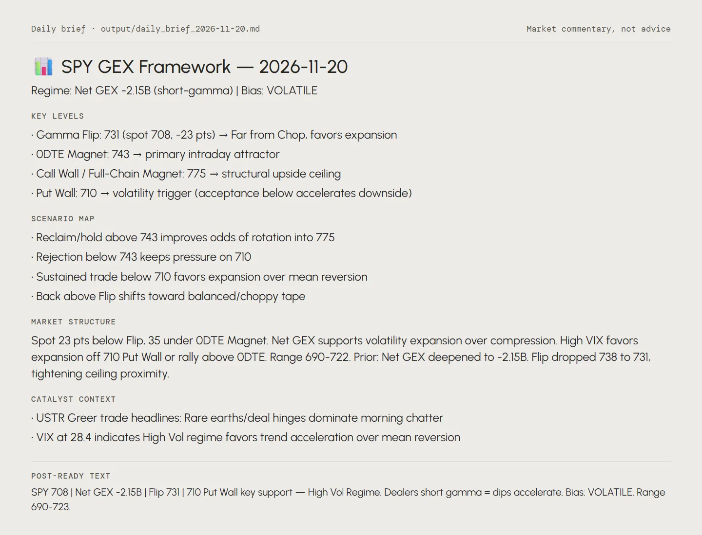
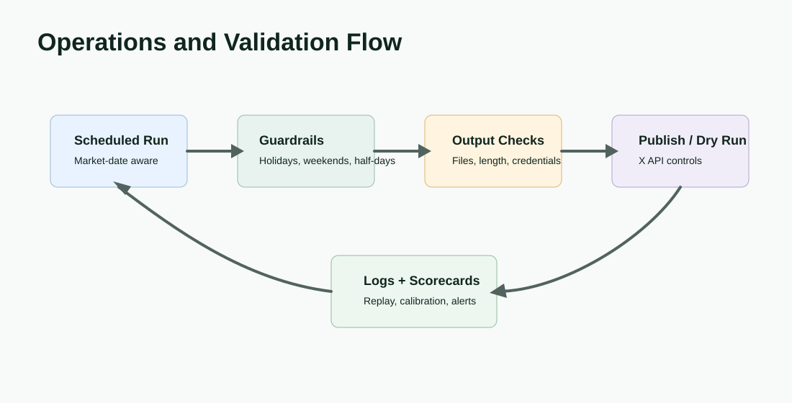

Problem
A morning market note has to be ready before the open on every trading day, and it is only as good as the numbers under it. Asking a language model for commentary gives fluent text with nothing to check it against. The numbers needed to be computed first, stored so any day can be reviewed later, and kept apart from the step that writes and publishes the text.
Solution
Two Python pipelines share the work. CalculateGamma pulls the SPY options chain and SPY and VIX prices, then computes gamma exposure for the full chain and for same-day (0DTE) options. From that it derives the levels a reader looks for. These are the gamma flip, the magnet strike, the top call and put walls, and the put/call open-interest ratio. ATR and VIX set an expected range for the day, and a prior-day comparison shows how the levels moved. The results go to SQLite, CSV files, TradingView Pine inputs and a written brief.
AI Morning Call adds macro indicators, futures, ETFs, the economic calendar and FinancialJuice headlines. The database held 1,798 stored headlines at the time of review. Four hosted models answer the same prompt, and a local Qwen model combines their answers by equal vote. The run stops before the vote if fewer than two models respond, and every raw answer is saved next to the final post.
Daily Output

Workflow

Design Decisions
Analytics Before Language
Gamma levels, VIX context, ATR ranges and prior-day shifts are computed before any model text is generated, so the brief describes numbers a reader can check.
SQLite Replayability
Daily market state, briefs, generated posts, model answers and outcomes are stored so any run can be reviewed later. The gamma tables are written with upserts, so rerunning a day replaces its rows instead of duplicating them.
Publishing Separation
The post step validates credentials, content file, and length separately from data collection and brief generation.
Model Accountability
A scorecard stores each day's stated range next to the actual high, low and close. Each model's answer is logged with the day's outcome instead of living only in a one-off prompt.
Operations And Reliability
Both runners work in Eastern Time and check the market calendar. On a non-trading day the morning call still stores its data but skips the model calls, and it does not post on half-days. A failed gamma run sends an email or ntfy alert, and the morning call alerts over Telegram. The morning call prunes its tables on 30-day and 180-day retention windows. Posting to X is optional and has a dry-run mode.
The GexLevels account on X is the public output for the brief. The output is market commentary. It is not investment advice, and the project makes no trading-performance claim.